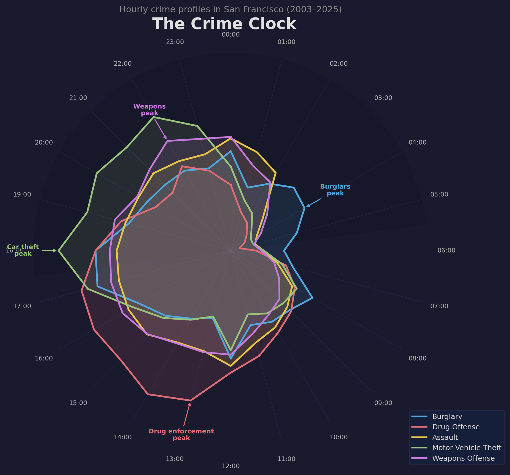

Data Story · San Francisco Crime 2003–2025
San Francisco has logged nearly three million crimes since 2003. But crime data records what police report, not what happens. The difference is most visible at 13:00 on a Tuesday in the Tenderloin.
This analysis draws on 2,934,658 SFPD incident reports filed between 2003 and 2025. But crime data is not a neutral record of what happens on the streets. It records what police choose to look for, in the places they choose to look. That distinction matters, and it shows up clearly when you break the data down by hour.
We look at five crime types: Burglary, Drug Offense, Assault, Motor Vehicle Theft, and Weapons Offense. Most follow patterns driven by human behavior. One of them mostly follows police shift schedules. The clearest signal comes from the Tenderloin, a dense, low-income neighborhood just south of downtown that has been the focus of concentrated SFPD enforcement for decades.
The polar chart below shows the hourly distribution of each crime type, normalized to its own peak. A spike at the outer ring means that hour is the busiest for that offense. Most patterns are easy to explain. One is not.

Hourly crime profiles normalized to each crime's peak. Burglary dominates the pre-dawn quiet. Drug Offense spikes at midday, a pattern driven by patrol schedules, not drug use behavior. Assault and Weapons Offense rise sharply into the evening as nightlife takes hold. Motor Vehicle Theft peaks around 18:00 as cars sit unattended after rush hour.
Burglary peaks between midnight and 05:00, when homes are dark and streets are empty. Assault and Weapons Offense peak between 20:00 and 23:00, tracking bar closing times. Motor Vehicle Theft rises with the evening commute and holds overnight. These are all crimes where a victim or witness calls the police after the fact. The reporting time roughly reflects when the crime happened.
Drug Offense is different. It peaks at 13:00 on a weekday afternoon and stays elevated through the working day. Drug use does not follow office hours. Police patrols do.
If Drug Offense peaks midday because of patrol scheduling, that signal should show up geographically: the most heavily patrolled neighborhoods should look the most daytime-heavy. The map below shows what percentage of the five focus crimes in each district occur during business hours (09:00–17:00). Green districts lean daytime; red districts lean nighttime.
Percentage of focus crime incidents occurring between 09:00 and 17:00, by police district (2003–2025). The Tenderloin records the highest share of daytime crime, driven by its concentration of drug enforcement activity. Outer residential districts like Richmond show a stronger nighttime lean.
The Tenderloin sits at the top. It is San Francisco's most intensively patrolled neighborhood, with dedicated SFPD operations running there for decades. Its high daytime share is driven almost entirely by Drug Offense. The midday spike in the Crime Clock is not a citywide phenomenon. It is concentrated in a few blocks of one district.
The outer residential districts (Richmond, Taraval, Ingleside) sit at the lower end because their dominant crimes are Burglary and Motor Vehicle Theft, which happen at night regardless of patrol density. A stolen car gets reported by its owner. No officer needs to be present to make it into the data.
The animated map below puts both stories on the same screen. Each dot is a real incident, sampled proportionally so that busier hours show more dots. The bar chart on the right gives exact counts per crime type. Use the slider to move through the day, or press Play. Watch what happens between 04:00 and 13:00.
Each dot is a real reported incident, sampled so that busier hours show proportionally more dots. Hover over any dot to see the specific charge, district, and year. Zoom and pan freely. Data: SFPD Incident Reports 2003–2025.
At 04:00 the map is almost entirely blue: Burglary dots spread across the residential west side. At 13:00, red Drug Offense dots pack into a tight cluster in the Tenderloin while the rest of the city shows almost nothing. By 22:00, yellow Assault and purple Weapons dots fill the Mission and SoMa bar corridors.
The bar chart makes the contrast impossible to miss. Drug Offense at 13:00 has nearly 600 dots in the sample. The same crime at 04:00 has fewer than 50. Burglary is the mirror image. These two crimes do not just peak at different times; they barely overlap at all. One is a pattern of behavior. The other is a pattern of policing.
The Burglary, Assault, Motor Vehicle Theft, and Weapons Offense patterns in this data are almost certainly real: they follow the clock of human activity in ways that make sense independently of policing. Drug Offense does not. That does not mean drug activity in the Tenderloin is not a real problem. It means the data cannot tell you whether it is getting better or worse, because the numbers go up when patrols increase and down when they are cut, regardless of what is actually happening on the street.
As Richardson, Schultz, and Crawford (2019) put it, this is "dirty data": when enforcement concentrates on certain places and times, the statistics will always confirm that those places and times have the highest crime, because that is where police are looking.
Data: SFPD Incident Report dataset from
SF Open Data, merged across the
2003–2017 and 2018–2025 reporting systems. All times are local San Francisco time.
Reference: Richardson, R., Schultz, J., & Crawford, K. (2019).
Dirty Data, Bad Predictions: How Civil Rights Violations Impact Police Data,
Predictive Policing Systems, and Justice.
New York University Law Review Online, 94, 192–233.
This assignment has been done solely by me (by choice) — Marcus Lilleør Christoffersen, s224750.